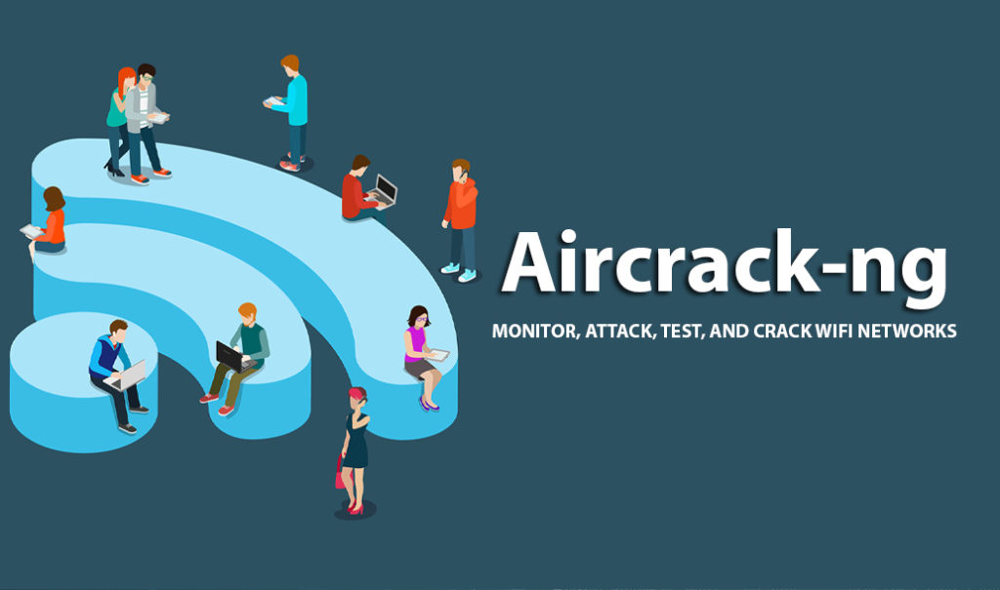

Quebrando senha Wi Fi WPA/WPA2-PSK / Aircrack-ng / Kali Linux / Brute force attack

Descrição do Aircrack-ng Aircrack-ng é um programa para quebrar chaves WEP e WPA/WPA2-PSK do IEEE 802.11. Aircrack-ng pode recuperar a chave WEP, uma vez que um número suficiente de pacotes criptografados sejam capturados com o airodump-ng.
Esta parte do pacote Aircrack-ng determina a chave WEP usando dois métodos fundamentais. O primeiro método é por abordagem PTW (Pyshkin, Tews, Weinmann). A principal vantagem da abordagem PTW é que pouquíssimos pacotes de dados são necessários
para quebrar a chave WEP. O segundo método é o método FMS/KoreK. O método FMS/KoreK incorpora vários ataques estatísticos para descobrir a chave WEP e usa esses ataques em combinação com força-bruta. Adicionalmente, o programa oferece
um método de dicionário para determinar a chave WEP. Para quebrar chaves pré-compartilhadas WPA/WPA2, somente o método de dicionário é utilizado. Descrição de WordList Wordlists são arquivos geralmente contendo uma palavra por linha. São
utilizados em ataques de força bruta, do inglês brute-force que permitem ao atacante tentar bilhões de senhas contra um sistema por exemplo. Nesse video eu fiz uso de Wordlist para tentar muitas combinações possivéis.
Click aqui para fazer download da WORDLIST.
Attack Evil Twin com Fluxion / Kali Linux 2020.2 / Evil Twin
O que é um ataque Evil Twin? Esse tipo de ataque não é considerado uma técnica nova e consiste em obter informações sem o conhecimento do usuário, fazendo ele acreditar que está se conectando a um hotspot com um sinal forte. Na realidade,
o usuário pode estar se conectando a um servidor malicioso que pode monitorar e obter os dados digitais do usuário. Como o ataque Evil Twin funciona? O invasor configura seu computador para transmitir um sinal que o torne um ponto de acesso,
um hotspot de Wi-Fi. Primeiramente ele interrompe ou desabilita o AP legítimo, desconectando-o ou criando uma interferência de RF (sinais de radiofrequência) em torno dele. Os usuários acabam perdendo a conexão com o AP legítimo e reconectam
com o Evil Twin. Assim, quando a vítima se conecta a essa rede wireless, o hacker pode roubar credenciais de acesso a diferentes plataformas e injetar códigos maliciosos em navegadores, vindo a redirecionar o usuário para sites com malware.
Ao efetuar login em contas bancárias ou de e-mail não seguras (sem HTTPS) o hacker intercede a transação. Os dispositivos hotspot (Evil twins) são configurados por meio de uma placa sem fio para atuar como ponto de acesso (HostAP) e se
tornam difíceis de rastrear pois podem ser desligados instantaneamente pelo atacante. FLUXION O Fluxion é uma ferramenta poderosa de auditoria e segurança, servindo também pra pesquisa no ramo da engenharia social. É uma tentativa de melhora
se comparado a vários outros antigos e muitas outras ferramentas do “passado”, com menos erros e mais funcionalidades. O script do Fluxion tenta recuperar a chave WPA/WPA2/WEP de um ponto de acesso indicado como destino por meio de um
tipo de ataque de engenharia social, o tão famoso Phishing. Tem compatibilidade com várias distribuições GNU/Linux disponíveis. O tipo de ataque manual é tido como a principal forma de trabalho do Fluxion, mas também existe um modo automático
que só depende de alguns parâmetros prévios de configuração.
Invandindo camera de celular com CamPhish + Ngrok + Serveo / Kali Linux 2020
O que é o CamPhish? O CamPhish é uma técnica para tirar fotos da câmera do telefone do alvo ou da webcam do PC. CamPhish Hospeda um site falso no servidor PHP integrado e usa o ngrok & serveo para gerar um link que encaminharemos para o destino,
que pode ser usado na Internet. O site solicita a permissão da câmera e, se o alvo permitir, essa ferramenta captura fotos do dispositivo do alvo.